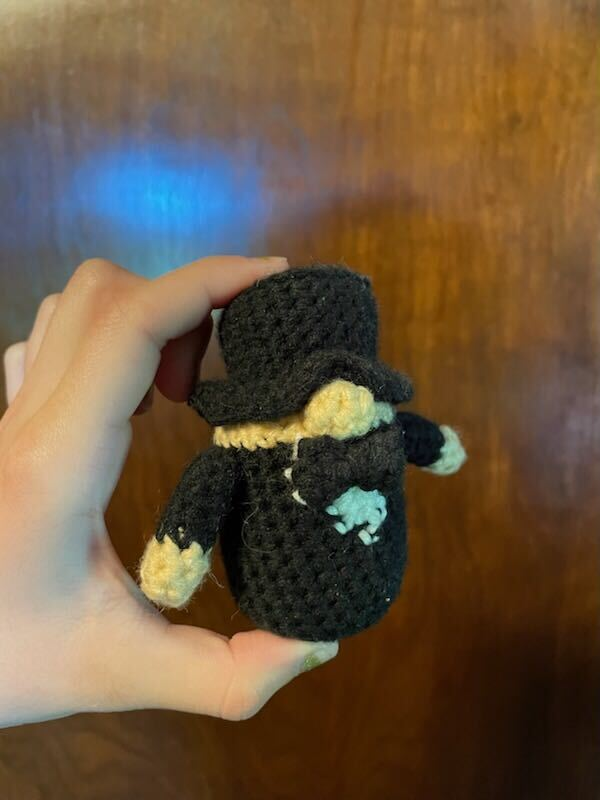

This pattern has alot of small peices that you will have to
sew together and is only about three inches tall. But this is a very
cute wedding present, I made this for my sister's wedding and continued
to make more as her family grew.

Materials: 3 Colors Of Yarn: Black, White, Skin Color, Crochet Hook, Skissor, Sewing Needle, and Stuffing.
Notes: This pattern uses the general size of yarn not small yarn. There is a lot of color
changing on the tuxedo. To color change, you start the stitch like normal but pull the new
color through the last two loops on the hook to finish the stitch. Then you will be starting
with the new color.
Stitches: Chain = (CH), Single Crochet = (SC), Back Loops Only = (BLO), Front Loops Only = (FLO) Increase = (INC), Decrease = (DEC), Slip Stitch = (SLST), Magic Ring = (MR), Stitches = (ST).
Body, Start with black:
Now stuff the body making sure not to overstuff it.
Fasten off leaving a long tail for sewing the top of the head closed.
Nose, Start with skin color:
Fasten off leaving a long tail for sewing to the body. Put a tiny bit of stuffing in the nose.
Arms, Make 2, Start with skin color:
Fasten off leaving a long tail for sewing to the body. Stuff the arms very lightly.
Top Hat, Start with black:
Fasten off leaving a long tail for sewing to the head. Stuff the hat but not too much.
Bow Tie, Start with black:
Fasten off leaving a VERY long tail. Fold the rectangle in half and sew the first row to the second row.
Now take the tail and wrap it around the middle of the folded rectangle to make the bow. Tie a knot to
secure but do not cut the tail off yet.
Assembly:
First sew the nose on the edge of the head where the tuxedo ends and the head begins. Now sew the top hat on the head
trying to make the brim curve around the nose. The arms will be sewn to each side of the body where the tuxedo ends and
the head begins. Lastly sew the bow tie right near the top of the tuxedo right in the middle of the white triangle.
Now you are all done!
Please do not copy this pattern, sell this pattern, or call it your own. You can make it yourself and sell it
or reference the website. If you have any questions, please feel free to contact me.